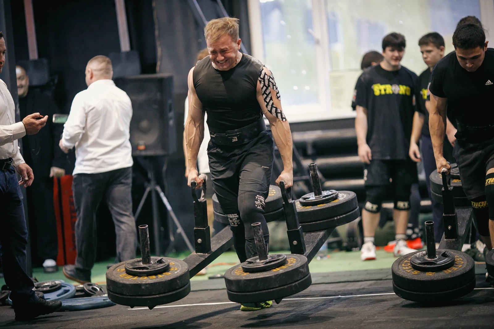
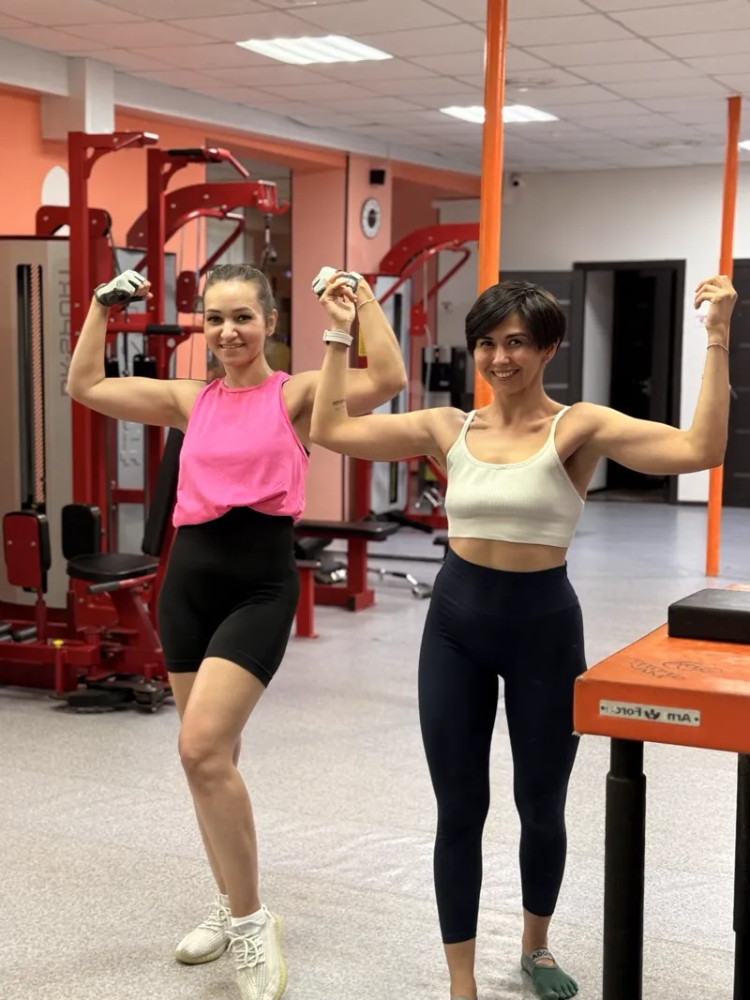
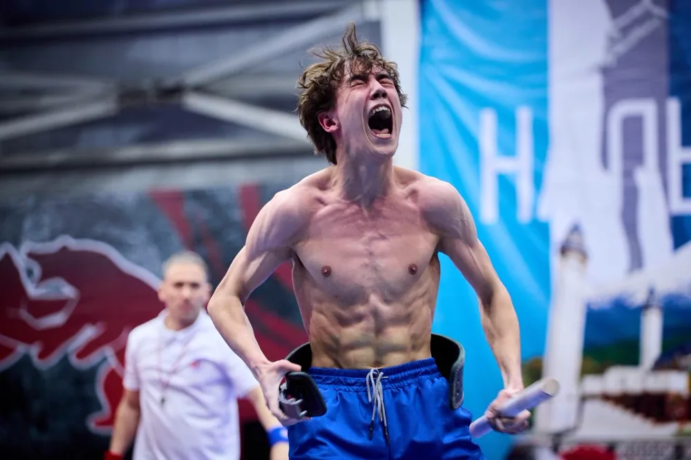
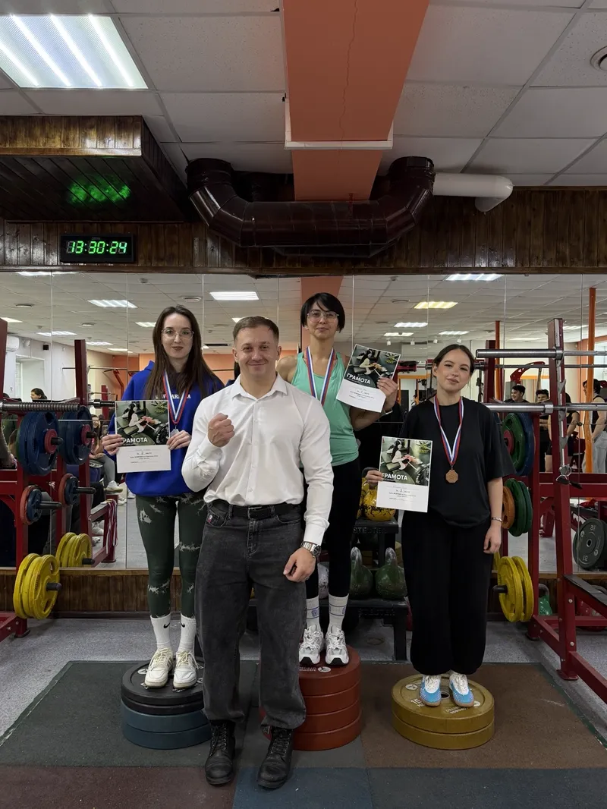
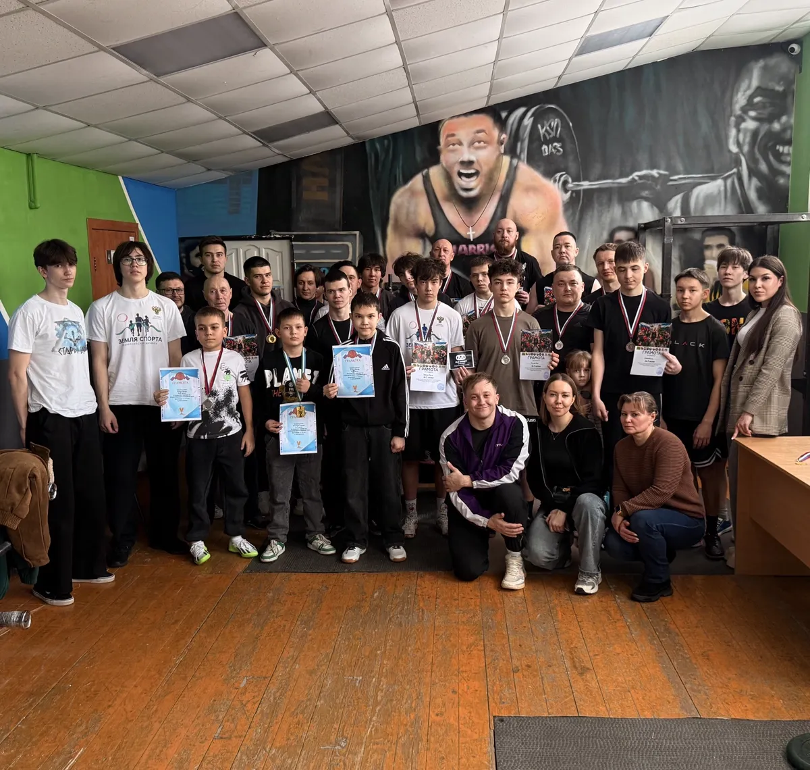
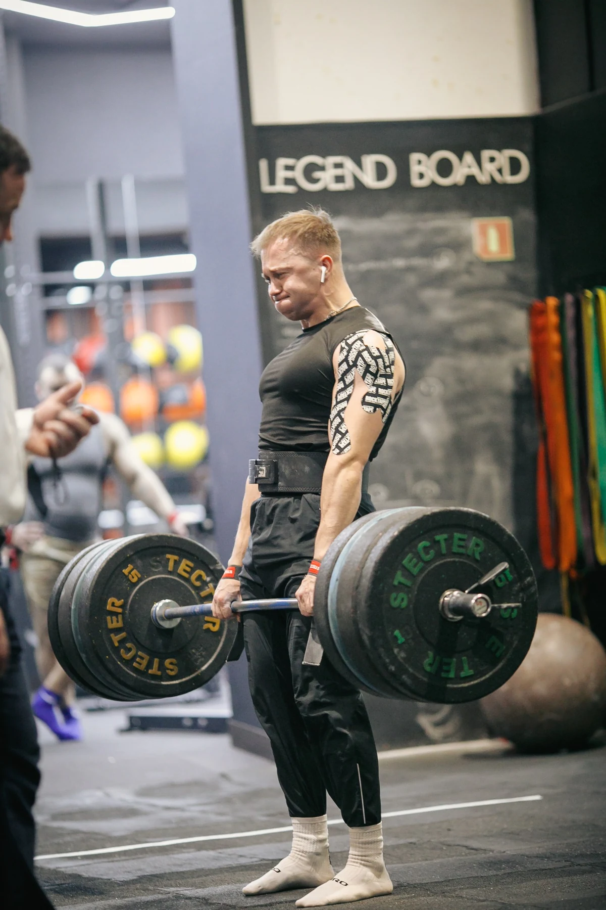
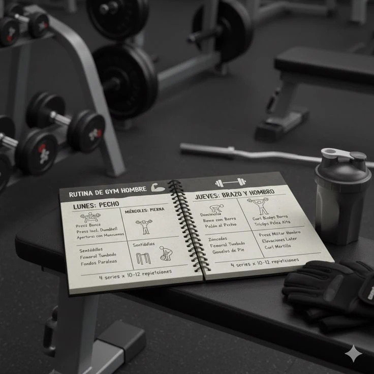
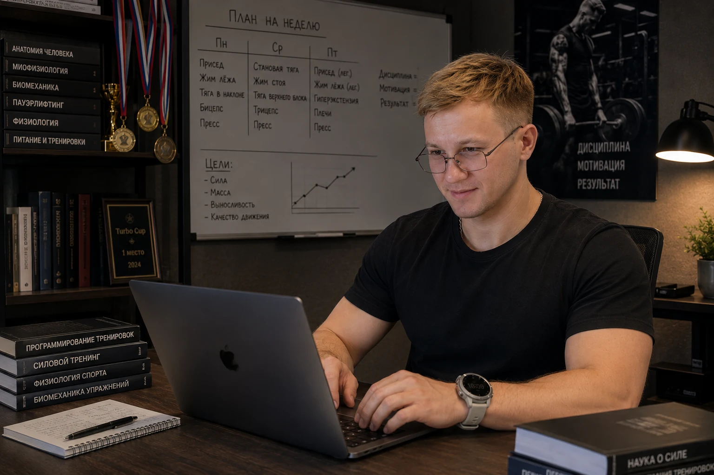
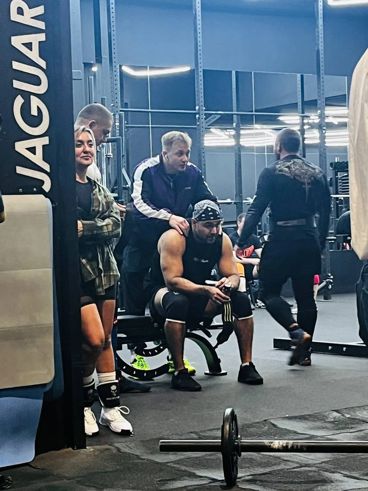

1. Снижение веса
Снижать вес и улучшать форму с понятным планом занятий: нагрузка под ваш уровень, регулярные тренировки и контроль динамики.
ANDRAGO TURBO · АНДРЕЙ БАТУРИН
Фитнес-клуб Sport Max
Помогаю повышать уровень физической подготовки: развивать силу, выносливость и уверенность в движении. Подбираю нагрузку под ваши возможности, ставлю технику и корректирую программу по мере прогресса.
Тренер высшей категории Мастер спорта по становой тяге КМС по пауэрлифтингу Участник «Богатырских игр»
Начать тренироватьсяНе знаете, с чего начать? Бесплатная первичная консультация

Персональный фитнес-тренер в Дюртюлях и специалист по силовой подготовке
Меня зовут Андрей Батурин. Я персональный тренер и специалист по физической и силовой подготовке, работаю в фитнес-клубе Sport Max в городе Дюртюли.
Помогаю людям развивать силу, выносливость и другие физические качества, набирать мышечную массу, снижать вес, сдавать нормативы ГТО и готовиться к спортивным соревнованиям.
В работе учитываю цель, уровень подготовки, технику выполнения упражнений, восстановление и индивидуальные особенности человека. Моя задача — выстроить понятную систему тренировок, которая приводит к измеримому результату.
Индивидуальная работа под вашу цель и уровень подготовки
Снижать вес и улучшать форму с понятным планом занятий: нагрузка под ваш уровень, регулярные тренировки и контроль динамики.
Работать над ростом мышц и силы по индивидуальной программе: техника упражнений, постепенное увеличение нагрузки и отслеживание прогресса.
Сила, выносливость, скорость, координация и общая физическая подготовка.
Построение тренировочного цикла и выход на результат к дате старта.
Обучение безопасной и эффективной технике базовых и вспомогательных упражнений.
Программа под цель, опыт, состояние здоровья и доступное оборудование.
Спортивные результаты и опыт подготовки подопечных
Мастер спорта по становой тяге, кандидат в мастера спорта по пауэрлифтингу
Участник спортивного телепроекта на телеканале СТС
Призёр всероссийских соревнований по силовому экстриму
Победитель соревнований Республики Башкортостан по силовому экстриму и мас-рестлингу
Подготовил победителя и призёра первенства мира, чемпиона России и многократных призёров всероссийских соревнований
Подготовил с нуля 8 кандидатов в мастера спорта за 4 года
Работа в зале, спортивная подготовка и участие в соревнованиях




Личный опыт и фрагменты занятий — включите видео, чтобы посмотреть
Выберите подходящий формат в зависимости от цели и необходимого уровня сопровождения

Индивидуальная работа в фитнес-клубе Sport Max в Дюртюлях. Определение цели, постановка техники, подбор нагрузки, контроль выполнения упражнений и отслеживание прогресса.

Подробный тренировочный план под вашу цель, уровень подготовки и доступное оборудование. В программе указываются упражнения, подходы, повторения, интенсивность и распределение нагрузки по неделям.

Дистанционное сопровождение с индивидуальной программой, регулярными отчётами, анализом техники по видео, корректировкой нагрузки и обратной связью.

Разбор текущей программы, оценка техники упражнений, рекомендации по нагрузке и план дальнейшей работы.
Понятная последовательность — от вашей цели к планомерному повышению уровня подготовки
На бесплатной первичной консультации обсуждаем ваш опыт, возможности и желаемое направление работы. Выбираем подходящий формат.
Определяем начальный уровень, разбираем технику и подбираем упражнения и нагрузку под ваши задачи.
Отслеживаем выполнение программы и динамику показателей. Корректируем нагрузку с учётом прогресса и восстановления.
Персональные занятия, индивидуальная программа или онлайн-ведение
Напишите, какую задачу хотите решить и какой формат вам удобен. Обсудим объём сопровождения и актуальную стоимость до начала работы.
Первичная консультация — бесплатно.
Обсудить формат и стоимостьДа. Программу и нагрузку подбираю под начальный уровень. Начинаем с освоения техники и постепенно усложняем работу.
Да. Разберём текущую программу, технику и показатели, определим задачи и выстроим дальнейшую работу для повышения уровня подготовки.
В фитнес-клубе Sport Max: г. Дюртюли, ул. Ленина, 21. Для дистанционной работы доступны индивидуальная программа и онлайн-ведение.
Вы работаете по индивидуальной программе, присылаете отчёты и видео упражнений. Я анализирую технику, даю обратную связь и корректирую нагрузку.
Темп индивидуален и зависит от начального уровня, регулярности занятий и восстановления. Оцениваем динамику показателей и по ней корректируем программу.
Напишите в Telegram или позвоните по номеру в разделе контактов. Обсудим цель, формат и актуальную стоимость. Первичная консультация бесплатная.
Нажмите на номер телефона, чтобы сразу позвонить и записаться на тренировку. Или напишите мне в Telegram или Instagram — обсудим вашу цель и выберем подходящий формат работы.
Андрей Батурин
Персональный тренер в фитнес-клубе Sport Max
+7 923 176-69-77 г. Дюртюли, ул. Ленина, 21